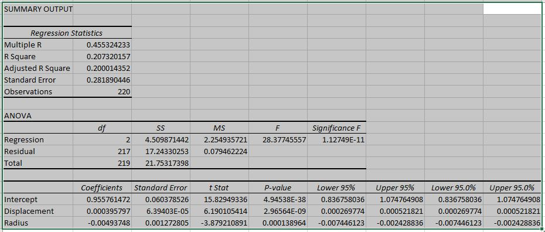
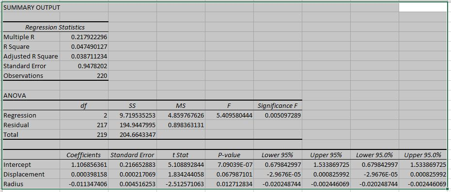
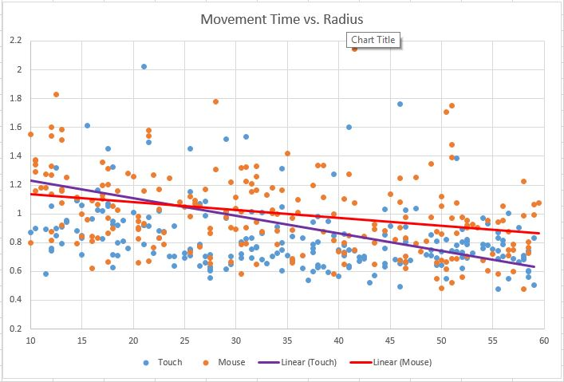
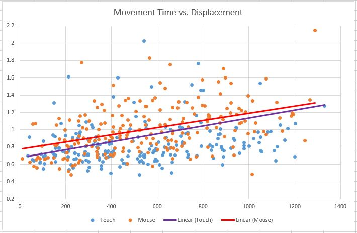

Before making any claims as to what our results mean, we will have to analyse any trends we see to verify that they have sufficient statistical significance to base any claims from. To do this, we decided to use Microsoft Excel to perform a multiple regression for mouse and touch data, respectively. Excel determined a range of statistical properties—many of which do not concern us with our type of analysis—but most importantly, gives us both a form of ‘best fit’ graph for each of our sets of data, along with an Analysis of Variance for each. Below are the tables generated for each input type, below each will be a discussion of how we interpret each.

Looking at the Regression Statistics for mouse data, we see that the R Squared value of 20.73% sits fairly low, meaning the model generated only accounts for around 1 fifth of the variance along the best fit line. Since we have more than one x variable in this multiple linear regression, we take note of the Adjusted R Squared value; though it is relatively indifferent at 20.00%. This means that the line could have a visibly perceived empty space between it and the raw data plots. To find out how statistically significant this regression is, we look to the ANOVA section. The P-values are all extremely low, suggesting that our variance was low and that there is a significance to our findings in this case.

Looking at the Regression Statistics for touch data, we see that the Adjusted R Squared value of 3.87% is extremely low, accounting for close to only one 20th of the variance along the best fit line. We could attribute this to the inclusion of large outliers found in touch data, which are skewing our results. In comparison to the results from the multiple regression of mouse data, these regression results are unfortunately much less reliable; this is reflected in the P-values, which are up to one hundred times greater than those of the previous regression.
Another way we can analyse our results is to compare our dependent vaiable with each independent variable, individually. Below are graphs directly comparing mouse and touch results for each isolated x variable.

What we can see from this regression is that there is definitely a negative relationship between target radius and time to click; however the link is stronger with touch data. The different gradients for each input type also show a point of intersection—visible at around radius=25px. What this tells us is that based on our results, it could be said that mouse input allows for faster pointing until target radii become less than 25 pixels. This would match part of our hypothesis where we thought that touch input would be more difficult with smaller targets, due to the effects of parallax error and the fact that human fingertips have a relatively large surface area; making them harder to maintain accuracy with smaller targets.

What this regression shows is that the difference in relationships between displacement and time to click is a lot more difficult to call significant. Both show a positive linear relationship as expected; with only a slight difference in y-intersept (the 'c' in y = mx + c). In this case, the isolation does not give us enough to make a claim from.